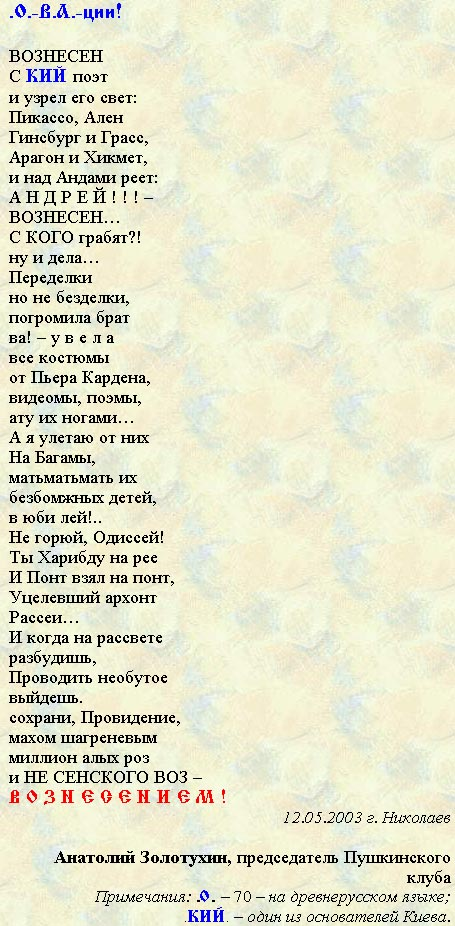

г. Николаев, 4.08.2002 г.,
А.А.Вознесенский.
Фото А. Кремко.
Посвящается 70-летию А.А. Вознесенского!
Пушкин говорил, что в жизни бывают странные сближения. Вот одно из них. Известно, что Александр Сергеевич Пушкин родился в четверг 26 мая 1799 г., по старому стилю. Этот день пришелся на один из двунадесятых праздников Православной церкви - Вознесение Господне! Поэт при случае всегда отмечал, что "важнейшие события его жизни совпадали с днем Вознесения".
Андрей Андреевич Вознесенский родился в пятницу 12 мая 1933 г., по новому стилю. Праздник Вознесения Господнего отмечался в четверг 12 мая 1933 г., по старому, пушкинскому, стилю. Если принять во внимание условности различий календарного стиля, влияние обоих поэтов на судьбы страны, новаторский характер поэтического творчества, то можно считать, что сближение налицо! Разумеется, разница в 134 года предопределила различие судеб и творчества. Но, вероятно, именно странное сближе-ние с великим праздником Вознесением Господним сделало их великими, а совпадение фамилии Вознесенского с именем самого праздника - продлило ему, по сравнением с Пушкиным, еще и годы жизни…
|
г. Николаев, 4.08.2002 г., |
 |